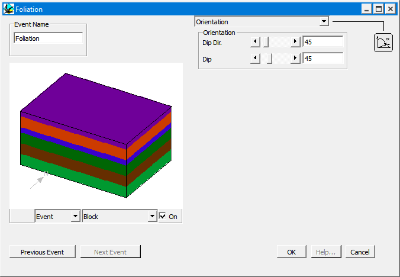

Foliation
In order to define an Foliation event, place an Foliation icon in the History window. You will then be provided with the Foliation definition window.

Foliation allows arbitrary penetrative foliations to be added to the geology. These foliations are not associated in any way with any other deformation, and do not displace the geology in any way, they are merely available as extra planar orientation markers, and as such could be used to represent cross-bedding in a sandstone, or igneous layering or more typically a cleavage not otherwise associated with a deformation event.
| GROUP | NAME | FUNCTION |
|---|---|---|
| Orientation | Dip Dir | Dip Direction of foliation |
| Dip | Dip of Foliation |
Noddy · open source under the MIT licence · Loop3D/noddy_qt